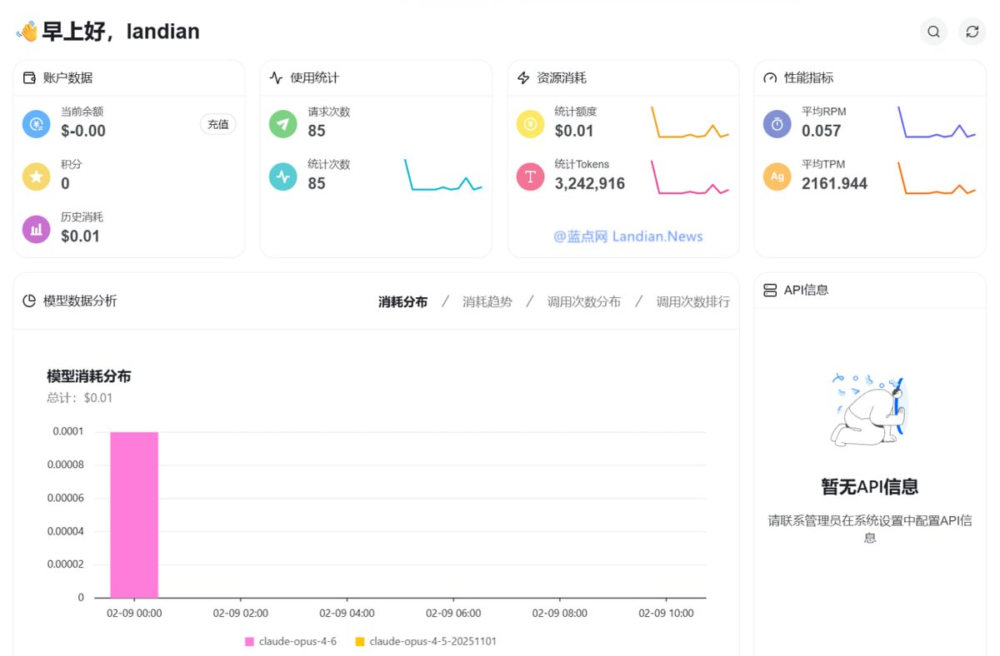

@landiantech 这边
https://t.co/0zYIpCYIbB
也在做活动，openclaw可以免费用opus，质量在可用线上。


我爱白嫖！不限量白嫖 Claude Opus 4.6 等模型，新 API 中转站提供免费 1 周不限量白嫖活动，注册即可使用。蓝点网在折腾 #OpenClaw 时消耗太多 Token，所以只能找免费模型先顶上，昨晚测试使用 OpenRouter 免费模型能用但速度太慢，换上 Claude 后速度直接起飞：https://t.co/0xnPKQzMwQ https://t.co/eB1lqdo19E